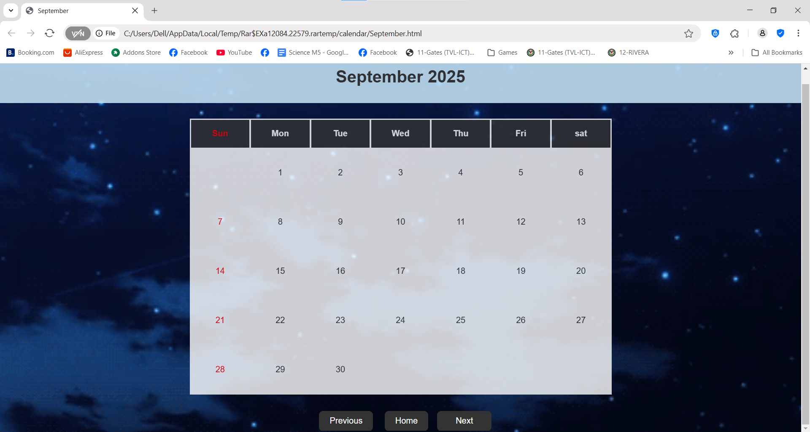

Welcome to My Portfolio

About Me
Hi! I'm Jose Zedrek A. Labares, a tech enthusiast and college student currently studying at CITE Institute Inc. I’m passionate about building, breaking, and debugging things—usually in that order.
You can download my "Resume" here.
I enjoy diving into code, exploring new technologies, and figuring out how stuff works (or why it suddenly doesn’t). From front-end design to back-end logic, I’m always looking to level up my skills and take on new challenges.
Currently fluent in HTML, CSS, and a growing number of programming languages. Working toward becoming the kind of developer who writes code that works... and makes sense six months later.
Always learning. Sometimes compiling. Rarely sleeping.


Education
I am currently pursuing foundational training in Information Technology at CITE Technical Institute, Inc., where I am gaining hands-on experience in areas such as computer systems, networking, programming, and IT support.
I am currently enrolled at CITE Technical Institute, Inc., where I’m building a solid foundation in Information Technology with practical skills in hardware troubleshooting, network configuration, basic programming (e.g., Python, Java), and IT support systems.
Training
I am currently undergoing training in web development, focusing on front-end technologies including HTML, CSS, and JavaScript, with an emphasis on building responsive, interactive, and user-friendly websites
Training/immersion
- CSS
- Animation
- TechSupport
CSS (hardware)
I gained hands-on experience in disassembling and assembling computer hardware during my training at CITE Institute Inc. Additionally, I earned my NC II certification in Computer Systems Servicing (CSS), equipping me with the technical skills to troubleshoot, maintain, and optimize computer systems.
Animation
I've started learning animation fundamentals and currently use Blender as my primary software. So far, I've explored keyframe-based animation and basic rigging, and I'm gradually diving into more advanced features like the Graph Editor, procedural animations, and physics simulations.
Tech support (current immersion)
I'm currently working as a Tech Support Specialist at Alliance, actively undergoing training and immersion to enhance my technical skills and product knowledge.
Projects
SHORT VIDEO ANIMATION
I once managed a project to make a video animtion for our school.
video sample of our animation
A SIMPLE WEBSITE CALENDAR
A sample of calendar project